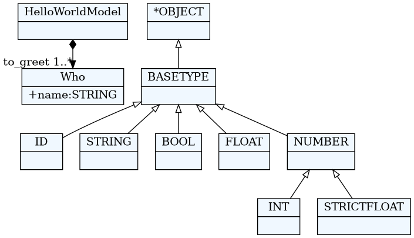
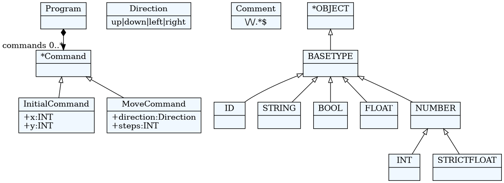
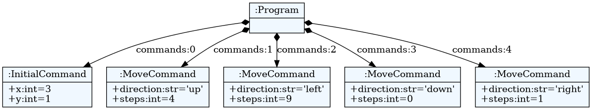
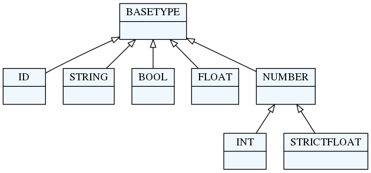
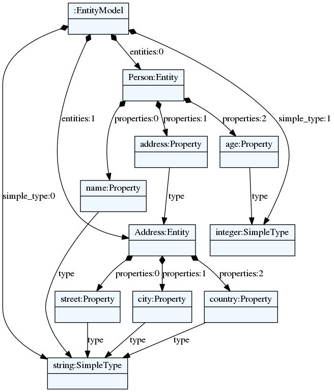
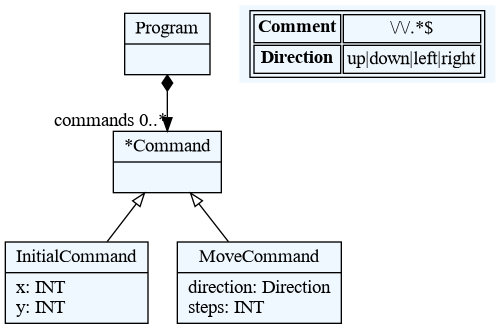
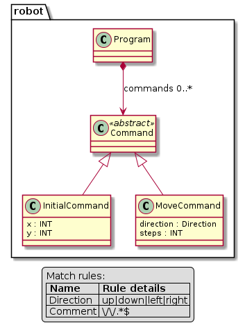

textX
Prof. dr Igor Dejanović (igord at uns ac rs)
Kreirano 2021-11-10 Wed 22:08, pritisni ESC za mapu, m za meni, Ctrl+Shift+F za pretragu
Sadržaj
- 1. Osnovne osobine
- 2. Arhitektura
- 3. Instalacija
- 4. Osnovna upotreba
- 5. textX jezik
- 6. Metamodeli
- 7. Modeli
- 8. Vizualizacije
- 9. Modularizacija
- 10. Obrada grešaka
- 11. RREL
- 12.
textxkomanda - 13. Registracija jezika i generatora
- 14. Kreiranje inicijalnog projekta
- 15. Primeri
- 16. Podrška u editorima
- 17. Veče džeza i slobodnih formi - improvizacije
1. Osnovne osobine
- 100% Python kod
- MIT licenca
- Istovremeno definisanje gramatike i meta-modela - inspirisan sa Xtext
- Automatska konstrukcija modela - podrška za razrešavane referenci
- Podrška za veze tipa celina-deo
- Kontrola parsiranja (whitespaces, case, keywords…)
- Postprocesiranje objekata modela ili celog modela
- Modularizacija gramatika - import
- Vizualizacija modela i meta-modela
- Dokumentacija i tutorijali dostupni na https://textx.github.io/textX/
2. Arhitektura

3. Instalacija
3.1. Instalacija
- Sa PyPI
$ mkdir ntp $ cd ntp $ python -m venv venv $ source venv/bin/activate $ pip install textX Looking in indexes: https://pypi.python.org/simple/ Collecting textX Using cached https://files.pythonhosted.org/packages/ff/df/33442dfb9ddfc2a9a84d60915ccf0602a5b04fdc46f523a7e939e588cd59/textX-1.8.0-py2.py3-none-any.whl Collecting Arpeggio>=1.9.0 (from textX) Using cached https://files.pythonhosted.org/packages/ec/5c/9cccf42a59406476f81993158376947a1487e3fcd84c01914c1ad17e54e1/Arpeggio-1.9.0-py2.py3-none-any.whl Installing collected packages: Arpeggio, textX Successfully installed Arpeggio-1.9.0 textX-1.8.0
3.2. Instalacija razvojne verzije
$ mkdir ntp
$ cd ntp
$ python -m venv venv
$ source venv/bin/activate
$ pip install https://github.com/textX/textX/archive/master.zip 1 ↵
Looking in indexes: https://pypi.python.org/simple/
Collecting https://github.com/textX/textX/archive/master.zip
Downloading https://github.com/textX/textX/archive/master.zip
/ 6.3MB 6.0MB/s
Collecting Arpeggio>=1.9.0 (from textX==1.8.0)
Using cached https://files.pythonhosted.org/packages/ec/5c/9cccf42a59406476f81993158376947a1487e3fcd84c01914c1ad17e54e1/Arpeggio-1.9.0-py2.py3-none-any.whl
Collecting click==7.0 (from textX==1.8.0)
Using cached https://files.pythonhosted.org/packages/fa/37/45185cb5abbc30d7257104c434fe0b07e5a195a6847506c074527aa599ec/Click-7.0-py2.py3-none-any.whl
Installing collected packages: Arpeggio, click, textX
Running setup.py install for textX ... done
Successfully installed Arpeggio-1.9.0 click-7.0 textX-1.8.0
3.3. Instalacija za razvoj
$ mkdir ntp
$ cd ntp
$ python -m venv venv
$ source venv/bin/activate
$ git clone git@github.com:textX/textX.git
Cloning into 'textX'...
Enter passphrase for key '/home/igor/.ssh/id_rsa':
remote: Enumerating objects: 65, done.
remote: Counting objects: 100% (65/65), done.
remote: Compressing objects: 100% (56/56), done.
remote: Total 7649 (delta 23), reused 32 (delta 9), pack-reused 7584
Receiving objects: 100% (7649/7649), 9.20 MiB | 2.21 MiB/s, done.
Resolving deltas: 100% (4657/4657), done.
$ pip install -e textX
Looking in indexes: https://pypi.python.org/simple/
Obtaining file:///home/igor/ntp/textX
Requirement already satisfied: Arpeggio>=1.9.0 in ./venv/lib/python3.7/site-packages (from textX==1.8.0) (1.9.0)
Requirement already satisfied: click==7.0 in ./venv/lib/python3.7/site-packages (from textX==1.8.0) (7.0)
Installing collected packages: textX
Found existing installation: textX 1.8.0
Uninstalling textX-1.8.0:
Successfully uninstalled textX-1.8.0
Running setup.py develop for textX
Successfully installed textX
4. Osnovna upotreba
4.1. Gramatika = meta-model + konkretna sintaksa
HelloWorldModel:
'hello' to_greet+=Who[',']
;
Who:
name = /[^,]*/
;
from textx import metamodel_from_file
hello_meta = metamodel_from_file('hello.tx')

4.2. Model = program
hello World, Solar System, Universe
4.3. Parsiranje - instanciranje modela
example_hello_model = hello_meta.model_from_file('example.hello')

- Model je graf Python objekata čija struktura je u skladu sa gramatikom (npr.
HelloWorldModelobjekat sadrži Python listuto_greet). - Model možemo dalje interpretirati, analizirati, generisati kod…
4.4. Provera i vizualizacija meta-modela
- textX će pri parsiraju gramatike prijaviti sintaksne greške.
Ako želimo možemo proveriti gramatiku u toku razvoja:
textx check hello.tx/home/igor/repos/igordejanovic.github.io/courses/tech/textX/hello.tx: OK.
U slučaju greške biće prijavljena tačna lokacija.
Error in meta-model file. Expected 'abstract_rule_ref' at position (6, 9) => ': name |*= /[^,]*/ '.
ili vizualizovati
textx list-generatorsany -> dot textX Generating dot visualizations from arbitrary models textX -> dot textX Generating dot visualizations from textX grammars textX -> PlantUML textX Generating PlantUML visualizations from textX grammars
textx generate hello.tx --target dotGenerating dot target from models: /home/igor/repos/igordejanovic.github.io/courses/tech/textX/hello.tx -> /home/igor/repos/igordejanovic.github.io/courses/tech/textX/hello.dot To convert to png run "dot -Tpng -O hello.dot"
4.5. Robot primer
fajl robot.tx
Program:
'begin'
commands*=Command
'end'
;
Command:
InitialCommand | MoveCommand
;
InitialCommand:
'initial' x=INT ',' y=INT
;
MoveCommand:
direction=Direction (steps=INT)?
;
Direction:
"up"|"down"|"left"|"right"
;
Comment:
/\/\/.*$/
;
fajl program.rbt
begin
initial 3, 1
up 4
left 9
down
right 1
end
4.6. Instanciranje meta-modela
from textx import metamodel_from_file
robot_mm = metamodel_from_file('robot.tx')

textx generate robot.tx --target dot
dot -Tpng -O robot.dot
4.7. Parsiranje i instanciranje modela
robot_model = robot_mm.model_from_file('program.rbt')
begin
initial 3, 1
up 4
left 9
down
right 1
end

textx generate program.rbt --grammar robot.tx --target dot
dot -Tpng -O program.dot
4.8. Šta raditi sa modelom?
- Interpretiranje
- Generisanje koda
- Razne vrste analize i transformacije
4.9. Interpretiranje Robot modela
class Robot(object):
def __init__(self):
# Initial position is (0,0)
self.x = 0
self.y = 0
def __str__(self):
return "Robot position is {}, {}.".format(self.x, self.y)
4.10. Interpretiranje Robot modela
def interpret(self, model):
# model is an instance of Program
for c in model.commands:
if c.__class__.__name__ == "InitialCommand":
print("Setting position to: {}, {}".format(c.x, c.y))
self.x = c.x
self.y = c.y
else:
dir = c.direction
print("Going {} for {} step(s).".format(dir, c.steps))
move = {
"up": (0, 1),
"down": (0, -1),
"left": (-1, 0),
"right": (1, 0)
}[dir]
# Calculate new robot position
self.x += c.steps * move[0]
self.y += c.steps * move[1]
4.11. Interpretacija Robot modela
robot = Robot()
robot.interpret(robot_model)
begin
initial 3, 1
up 4
left 9
down
right 1
end
Setting position to: 3, 1 Robot position is 3, 1. Going up for 4 step(s). Robot position is 3, 5. Going left for 9 step(s). Robot position is -6, 5. Going down for 0 step(s). Robot position is -6, 5. Going right for 1 step(s). Robot position is -5, 5.
Problem: Ako ne zadamo korak podrazumevano je 0 (textX definiše default vrednosti za bazične tipove).
4.12. Object processor
def move_command_processor(move_cmd):
"""
This is object processor for MoveCommand instances.
It implements a default step of 1 in case not given
in the program.
"""
if move_cmd.steps == 0:
move_cmd.steps = 1
MoveCommand:
direction=Direction (steps=INT)?
;
Registracija procesora na meta-modelu:
# Register object processor for MoveCommand
robot_mm.register_obj_processors({'MoveCommand': move_command_processor})
Sada se robot ponaša ispravno.
Setting position to: 3, 1 Robot position is 3, 1. Going up for 4 step(s). Robot position is 3, 5. Going left for 9 step(s). Robot position is -6, 5. Going down for 1 step(s). Robot position is -6, 4. Going right for 1 step(s). Robot position is -5, 4.
5. textX jezik
5.1. textX gramatička pravila
textX metajezik, odnosno gramatika, se sastoji od skupa pravila. Svako pravilo
ima jedinstveno ime definisano na početku pre dvotačke, i telo pravila koje
opisuje obrazac koji mora biti prepoznat od strane parsera. Pravilo se završava
karakterom ;. Pored obrasca za parsiranje, pravila u isto vreme definišu
koncepte ciljnog jezika tj. njegove apstraktne sintakse, odnosno metamodela. Ovi
koncepti će u vreme izvršavanja biti dostupni kao Python klase i biće korišćeni
za instanciranje objekata koje parser prepozna u ulaznom tekstualnom fajlu
modela/programa.
Na primer, ako razvijamo jezik za opis crteža, koncepti ovog jezika bi mogli
biti Shape, Line, Circle itd. Sledeće pravilo se koristi da opiše koncept
Circle:
Circle:
'Circle' '(' color=ID ',' size=INT ')'
;
5.2. Vrste pravila
Postoje tri vrste pravila u textX-u:
- Obična pravila (Common rules),
- Apstraktna pravila (Abstract rules), i
- Pravila prepoznavanja (Match rules).
5.3. Obična pravila
Obična pravila su pravila koja sadrže bar jedan izraz dodele (videti slajd 5.15), odnosno imaju definisane atribute. Ova vrsta pravila će za posledicu imati dinamičko kreiranje Python klasa koje će biti instancirane za vreme parsiranja ulaznog stringa.
Na primer:
InitialCommand:
'initial' x=INT ',' y=INT
;
Pravilo InitialCommand će dovesti do kreiranja Python klase istog imena čije
instance će imati dva atributa: x i y.
5.4. Apstraktna pravila
Apstraktna pravila su pravila koja nemaju izraze dodele i referenciraju bar jedno apstraktno ili obično pravilo. Najčešće su definisana kao uređeni izbor drugih pravila jer se koriste da generalizuju druga pravila. Na primer:
Program:
'begin'
commands*=Command
'end'
;
Command:
MoveCommand | InitialCommand
;
U ovom primeru, Python objekat u listi commands će biti ili MoveCommand ili
InitialCommand. Command pravilo je apstraktno. Ovo pravilo nikada neće
rezultovati Python objektom.
Apstraktno pravilo može da se koristi i u referencama povezivanja (videti slajd 5.21). Na primer:
ListOfCommands:
commands*=[Command][',']
;
Takođe, apstraktna pravila mogu referencirati pravila prepoznavanja i bazične tipove. Na primer:
Value:
STRING | FLOAT | BOOL | Object
| Array | "null"
;
U ovom primeru, bazični tipovi kao i prepoznavanje string "null" su pravila
prepoznavanja, ali Object i Array su obična pravila i stoga je Value pravilo
apstraktno.
Apstraktna pravila mogu biti složena sekvenca ili uređeni izbor referenci i pravila prepoznavanja dok god imamo bar jednu referencu na apstraktno ili obično pravilo. Na primer:
Value:
'id' /\d+-\d+/ | FLOAT | Object
;
Pravilo čije telo se sastoji samo od jedne reference prepoznavanja na drugo apstraktno ili obično pravilo je takođe apstraktno pravilo:
Value:
OtherRule
;
Ukoliko je OtherRule apstraktno ili obično pravilo tada je i Value apstraktno
pravilo.
5.5. Pravila prepoznavanja
Pravila prepoznavanja su pravila koje nemaju direktnih ili indirektnih izraza dodele, odnosno sva referencirana pravila su takođe pravila prepoznavanja. Obično se koriste da definišu nabrojive vrednosti ili složena prepoznavanja stringa koja se ne mogu iskazati obični regularnim izrazom.
Na primer:
Widget:
"edit"|"combo"|"checkbox"|"togglebutton"
;
Name:
STRING|/(\w|\+|-)+/
;
Ova pravila mogu da se koriste isključivo u referenciranju preko prepoznavanja,
odnosno ne mogu se koristiti u referencama veze jer ne definišu “prave” objekte.
Njihov tip u vreme izvršavanja je uvek osnovni Python tip (str, int, bool,
float).
Sva bazična, implicitna, textX pravila (npr. INT, STRING, BASETYPE) su pravila
prepoznavanja.
5.6. Bazična pravila/tipovi

ID— prepoznaje[^\d\W]\w*\b. Konvertuje prepoznati niz karaktera u Pythonstrtip.INT— prepoznaje cele brojeve[-+]?[0-9]+. Konvertuje prepoznati niz karaktera u Pythoninttip.FLOAT— prepoznaje realne brojeve. Konvertuje prepoznati niz karaktera u Pythonfloattip.
BOOL— prepoznaje bulovu vrednost (0/1,true/false). Prepoznati niz karaktera se konvertuje u Pythonbooltip.STRING— prepoznaje string pod jednostrukim ili dvostrukim znacima navoda. Znaci navoda se mogu naći unutar stringa, ali ukoliko su istog tipa kao i navodi koji se koriste da ograniče string mora se koristiti prefix'\'(eng. backslash escaping).
Prepoznati ugrađeni tipovi se automatski konvertuju u odgovarajuće Python tipove i postavljaju na podrazumevanu vrednost u okviru opcionih prepoznavanja.
5.7. Prepoznavanja (Matches)
Pored ugrađenih bazičnih pravila, pravila prepoznavanja su pravila najnižeg nivoa. Predstavljaju osnovne gradivne jedinice složenijih pravila. Ova pravila će konzumirati deo ulaza ukoliko je prepoznavanje uspešno.
Postoje dve vrste prepoznavanja: prepoznavanje stringa i prepoznavanje regularnog izraza.
5.8. Prepoznavanje stringa
Prepoznavanje stringa se piše kao string u jednostrukim ili dvostrukim znacima navoda. Ovako napisano pravilo prepoznaće zadati string sa ulaza u obliku u kom je zadat.
Primeri:
'blue'
'zero'
'person'
5.9. Prepoznavanje regularnog izraza
Prepoznavanje regularnog izraza koristi Python regularne izraze1 koji se navode
unutar / /. Dakle, definišu klasu stringova koji se mogu naći na ulazu.
Primeri:
/\d+/— prepoznaje string od jedne ili više cifri./\d{3,4}-\d{3}/— 3 ili 4 cifre, zatim ’-’ pa zatim još 3 cifre./[^}]*/— nula ili više karaktera različitih od ’}’.
5.10. Sekvenca (Sequence)
Sekvenca je najjednostavniji složeni izraz koji se dobija navođenjem podizraza jedan iza drugog. Na primer, sledeće pravilo:
Colors:
"red" "green" "blue"
;
je definisano kao sekvenca koja se sastoji od tri string prepoznavanja (red,
greeen i blue). Sekvenca će uspešno biti prepoznata ako su prepoznati svi njeni
podizrazi u redosledu u kom su navedeni. Prethodno Colors pravilo će prepoznati
sledeći string:
red green blue
Ukoliko je uključeno automatsko preskakanje praznih karaktera (whitespace skip), što je podrazumevano, tada se može između dva podizraza u sekvenci naći proizvoljan broj praznih karaktera kao što je prikazano u prethodnom primeru.
5.11. Uređeni izbor (Ordered choice)
Uređeni izbor se navodi kao skup izraza razdvojenih znakom |. Ovaj izraz će
pokušati da prepozna podizraze s leva na desno. Prvi izraz koji se uspešno
prepozna biće korišćen kao rezultat prepoznavanja.
Na primer, sledeće pravilo
Color:
"red" | "green" | "blue"
;
će prepoznati ili reč red ili green ili blue pri čemu će parser da pokuša svaki
od podizraza s leva na desno.
Ovo je u suprotnosti sa klasičnim parserima gde je operator izbora neuređen. textX kao tehnologiju za parsiranje koristi Arpeggio parser koji je baziran na PEG formalizmu gde je operator izbora uređen. Zbog toga parsiranje ne može biti višeznačno, odnosno ako se ulaz ispravno parsira može postojati samo jedno stablo parsiranja.
5.12. Opciono prepoznavanje (Optional)
Opciono prepoznavanje je izraz koji će da pokuša da prepozna svoj podizraz ako može, ali će uspeti u prepoznavanju i ukoliko podizraz nije prepoznat.
Na primer, ukoliko imamo pravilo
MoveUp:
'up' INT?
;
INT će biti opciono (jer je naveden znak ?) pa će biti moguće navesti broj iza
reči up, ali neće biti obavezno.
Sledeće linije će biti uspešno prepoznate prethodnim pravilom:
up 45
up 1
up
Opcioni izrazi mogu biti i složeniji. Na primer, kod pravila
MoveUp:
'up' ( INT | FLOAT )?
;
imamo da je uređeni izbor opcioni tako da ćemo u ovom slučaju moći navesti ceo
ili realan broj (INT ili FLOAT), ali nismo obavezni da to učinimo.
5.13. Ponavljanja (Repetitions)
Ponavljanje nula ili više puta (zero or more) se navodi upotrebom operatora *
iza podizraza. Podizraz će u tom slučaju biti prepoznat nula ili više puta.
Na primer, ukoliko imamo pravilo
Colors:
("red" | "green" | "blue")*
;
ponavljanje je primenjeno na uređeni izbor unutar zagrade. Stoga, parser će da pokuša da prepozna elemente uređenog izbora s leva na desno i kada obavi uspešno prepoznavanje ponavljaće ga dok god uspeva da prepozna jednu od zadatih reči.
Sledeći ulaz će biti uspešno parsiran:
red blue green
ali takođe i
red blue blue red red blue green
ili prazan string (prepoznavanje nula puta).
5.14. Ponavljanja (Repetitions)
Ponavljanje jednom ili više puta se navodi upotrebom operatora + iza
podizraza. Podizraz će u tom slučaju biti prepoznat jedan ili više puta.
Na primer, ukoliko imamo pravilo koje je slično prethodnom, ali koristi ovaj oblik ponavljanja
Colors:
("red" | "green" | "blue")+
;
obavezno je navođenje bar jedne boje, ali može se navesti i više u proizvoljnom redosledu i sa ponavljanjem kao i kod prethodnog pravila. Dakle, ovo pravilo ne prepoznaje prazan string.
5.15. Dodele (Assignments)
Dodele se koriste kao deo postupka za dedukciju metamodela. Svaka dodela rezultuje kreiranjem atributa meta-klase kreirane textX pravilom.
Svako pravilo ima svoju levu stranu (LHS) i desnu stranu (RHS). LHS je uvek ime atributa koji će biti kreiran dok je desna strana pravilo koje određuje šta se prepoznaje na datom mestu kao i tip objekta koji će biti instanciran i dodeljen atributu pri parsiranju i instanciranju modela. RHS je uvek referenca na drugo pravilo ili jednostavno prepoznavanje.
Na primer:
Person:
name=Name ',' surname=Surname ','
age=INT ',' height=INT ';'
;
Napomena: Pravilo Name i Surname su definisani u gramatici, ali nisu dati u ovom
primeru.
5.16. Dodele - kreiranje atributa
Prethodni primer opisuje pravilo i meta-klasu Person koje će parsirati i
instancirati objekat sa četiri atributa:
name— gde će se pravilomNameprepoznati objekat meta-klaseNamesa ulaza, instancirati i dodeliti atributu,surname— isto kao i zaname, ali se koristi praviloSurnamei dodeljuje atributusurname,age— koristiće se ugrađeno bazično praviloINTi broj koji se prepozna konvertovaće se u Pythoninttip i dodeliti atributu,height— isto kao i za atributage, ali će se prepoznati broj dodelitiheightatributuPersoninstance.Primer:
Petar, Petrović, 25, 185;
Zarezi, dati u prethodnom primeru, koji će biti prepoznati između prepoznavanja pravila dodele, kao i tačka-zarez na kraju, moraju se naći u ulaznom stringu, ali će biti odbačeni prilikom kreiranja modela jer nemaju nikakvo semantičko značenje. Kažemo da predstavljaju sintaksni šum.
5.17. Dodele - konverzije i vrednosti
Uvek kada je na RHS neki od bazičnih tipova (npr. INT, BOOL, FLOAT, ID) doći će
do konverzije prepoznatog stringa u odgovarajući Python tip (npr. int, bool,
float, str).
Ako je na RHS prepoznavanje stringa ili regularnog izraza kao u sledećem primeru:
Color:
color=/\w+/
;
tada će atribut na LHS (color) biti postavljen na vrednost koju prepozna RHS
pravilo.
Ukoliko se na RHS nalazi referenca na drugo pravilo tada će biti prepoznat i instanciran objekat klase datog pravila i atribut na LHS će biti referenca na datu instancu. Na primer:
Project:
'project' name=ID 'lead' lead=Person
;
lead atribut biće referenca na objekat klase Person a pravilo Person mora
uspešno prepoznati ovaj objekat iza ključne reči lead.
Postoje četiri vrste dodele: obična, bulova, nula ili više i jedan ili više.
5.18. Obična dodela
Obična dodela ( = ) će obaviti prepoznavanje RHS jednom i objekat koji se kreira dodeliti atributu na LHS.
a=INT
b=FLOAT
c=/[a-Z0-9]+/
dir=Direction
5.19. Bulova dodela
Bulova dodela ( ?= ) će postaviti LHS atribut na True ukoliko je RHS
prepoznat na ulazu ili na False ukoliko nije.
cold ?= 'cold'
number_given ?= INT
5.20. Dodela nula/jedan ili više
Dodela nula ili više ( *= ) će prepoznavati RHS sve dok uspeva i sve objekte redom smestiti u Python listu koja je na LHS. Ako prepoznavanje ne uspe ni jednom LHS će biti prazna lista.
commands*=Command // opcioni niz komandi
numbers*=INT // opcioni niz celih brojeva
Dodela jedan ili više ( += ) radi isto kao prethodna s tim što RHS mora da prepozna bar jedan objekat tj. LHS nikada neće biti prazna lista.
numbers+=INT // niz celih brojeva, mora postojati bar jedan
5.21. Reference (References)
Pravila mogu da se međusobno referenciraju. Reference se navode na RHS. Postoje dva načina referenciranja pravila: referenciranje preko prepoznavanja i referenciranje preko veze.
5.22. Referenciranje preko prepoznavanja
Referenciranje preko prepoznavanja se definiše prostim navođenjem imena nekog
drugog pravila. Možemo takođe reći i da pravilo koje vrši referenciranje poziva
pravilo koje se referencira. Na mestu referenciranja textX će pokušati da
prepozna ciljno pravilo u celosti i, ukoliko ga prepozna, instanciraće ga i
dodeliti atributu na levoj strani. Referenciranje preko prepoznavanja ima
semantiku sadržavanja. Objekat koji referencira sadrži objekat koji se
referencira. Kao dodatnu pomoć textX će automatski kreirati Python referencu
parent na objektu koji se referencira. Ovaj atribut će referencirati na objekat
koji referencira.
Structure:
'structure' '{'
elements*=StructureElement
'}'
;
U prethodnom primeru pravilo Structure referencira preko prepoznavanja pravilo
StructureElement. Unutar tela Structure koncepta, biće prepoznato nula ili više
instanci StructureElement klase. Instance će biti dodeljene elements atributu
koji će, u ovom slučaju, biti tipa Python liste.
5.23. Referenciranje preko veze
Referenciranje preko veze navodi ime ciljnog pravila unutar uglastih zagrada. Na ovom mestu, parser će pokušati da prepozna ime ciljnog objekta a ne objekat u celosti. Ciljni objekat mora da bude definisan negde drugo unutar modela. Ukoliko je objekat sa datim imenom pronađen, textX će automatski da atributu na levoj strani dodeli vrednost reference na ciljni objekat.
ScreenType:
'screen' name=ID "{"
'}'
;
ScreenInstance:
'screen' type=[ScreenType]
;
U prethodnom primeru, type atribut koji pripada pravilu ScreenInstance
referencira preko veze pravilo ScreenType.
Ovo bi bio primer pravilne upotrebe:
// Ovo je definicija ScreenType objekta
// koji se zove Introduction
screen Introduction {
}
// A ovo je instanca ScreenInstance koja
// referencira prethodni Introduction ScreenType.
screen Introduction
Iza ključne reči screen na poslednjoj liniji neće biti prepoznat ceo ScreenType,
kao što bi to bio slučaj sa referenciranjem preko prepoznavanja, već će biti
prepoznato ime (u ovom slučaju Introduction) ScreenType objekta i automatski će
veza biti razrešena u referencu na dati objekat koja će biti dodeljena type
atributu ScreenInstance instance.
Podrazumevano se koristi ID pravilo za prepoznavanje naziva ciljnog objekta.
Ukoliko želimo to da promenimo možemo uraditi sledeće:
ScreenInstance:
'screen' type=[ScreenType|WORD]
;
U prethodnom primeru će za prepoznavanje imena ciljnog objekta biti korišćeno
pravilo WORD.
5.24. Sintaksni predikati (Syntactic predicates)
Sintaksni predikati su operatori koji se koriste za implementaciju pogleda unapred (eng. lookaheads). Pogled unapred je tehnika koja omogućava da se donese odluka o primeni pravila za parsiranje na osnovu dela ulaznog stringa koji sledi bez da se taj deo stringa obradi tj. konzumira. Ovi operatori se navode kao prefiks za neko textX pravilo. Sintaksni predikat zajedno sa pravilom koje sledi čini novo pravilo koje uspeva ili ne uspeva bez konzumiranja ulaza. Najčešće će ovakvo pravilo biti deo sekvence čime će se omogućiti odustajanje od dalje analize sekvence ukoliko predikat nije uspeo.
Postoje dve vrste sintaksnih predikata u textX-u: Not i And.
5.25. Negativni pogled unapred
Not — negativni pogled unapred (!) — Uspeva ukoliko pravilo koje sledi
iza ! predikata ne prepoznaje nastavak ulaznog stringa i obrnuto.
Primer problema:
Expression: Let | ID | NUMBER;
Let:
'let'
expr+=Expression
'end'
;
U prethodnom primeru imamo rekurzivno pravilo Let koje se indirektno referencira
preko pravila Expression. Problem je u tome što će ID pravilo koje se poziva iz
Expression pravila prepoznati ključnu reč end što će dovesti do toga da nijedno
Let pravilo neće moći uspešno da se završi.
Da bismo rešili ovaj problem modifikujemo gramatiku na sledeći način:
Expression: Let | MyID | NUMBER;
Let:
'let'
expr+=Expression
'end'
;
Keyword: 'let' | 'end';
MyID: !Keyword ID;
Umesto direktne upotrebe ugrađenog ID pravila uvodimo pravilo MyID koje
koristi Not sintaksni predikat da spreči prepoznavanje ključnih reči let i
end kao izraze Expression pravila. Na ovaj način će end biti konzumirano
kao završetak Let pravila i gramatika će ispravno funkcionisati.
5.26. Pozitivni pogled unapred
And — pozitivni pogled unapred (&) — Uspeva ukoliko pravilo koje sledi
iza & predikata prepoznaje nastavak ulaznog stringa i obrnuto.
Primer:
Model:
elements+=Element
;
Element:
AbeforeB | A | B
;
AbeforeB:
a='a' &'b' // pravilo uspeva samo
// ako 'b' sledi posle 'a'
;
A: a='a';
B: a='b';
Ukoliko imamo ulazni string "a a a b", prva dva a tokena će biti prepoznati
pravilom A dok će treći token a biti prepoznat pravilom AbeforeB. Iako se uvek
proverava prvo AbeforeB, pravilo neće uspeti za prva dva a tokena jer iza ne
sledi token b. Poslednji token će biti prepoznat pravilom B jer ga prethodno
uspešno pravilo AbeforeB nije konzumiralo sa ulaza.
5.27. Uklanjanje prepoznatog ulaza (Match Suppression)
Nekada je potrebno definisati pravilo prepoznavanja koje će vratiti samo deo
prepoznatog ulaza. U ovom slučaju možemo koristiti operator za uklanjanje
prepoznatog ulaza (-) koji se navodi posle izraza prepoznavanja.
Na primer:
FullyQualifiedID[noskipws]:
/\s*/-
QuotedID+['.']
/\s*/-
;
QuotedID:
'"'?- ID '"'?-
;
U prethodnom primeru želimo da prepoznamo potpuno kvalifikovane identifikatore
(Fully Qualified IDs) gde delovi imena mogu biti pod znacima navoda. Na primer
— first."second".third. Takođe, želimo da uklonimo znake navoda iz imena.
Jedan način bi bio da radimo postprocesiranje posle završenog parsiranja, ali je
za tu namenu elegantnije rešenje upotreba operatora -.
Pravilo FullyQualifiedID koristi noskipws modifikator da bi onemogućio pojavu
praznih karaktera unutar potpuno kvalifikovanih imena. Zbog toga se moraju na
početku i na kraju prepoznati prazni karakteri i odbaciti ukoliko postoje što se
obavlja pravilom /\s*/-.
Pravilo FullyQualifiedID dalje prepoznaje jedan ili više QuotedID odvojenih
tačkama. Pravilo QuotedID prepoznaje ID koje opciono može biti unutar
znakova navoda a zatim prepoznate znakove navoda odbacuje upotrebom "-"
operatora.
5.28. Modifikatori ponavljanja (Repetition modifiers)
Koriste se za modifikaciju ponašanja svih operatora ponavljanja (*, +, *=,
+=). Navode se unutar uglastih zagrada iza operatora ponavljanja. Može se
navesti više modifikatora i u tom slučaju se razdvajaju zarezima.
U tekućoj implementaciji je definisano dva modifikatora ponavljanja: modifikator separacije i modifikator kraja linije.
5.29. Modifikator separacije
Modifikator separacije (Separator modifier) se koristi da definiše separator kod višestrukog prepoznavanja. Navodi se kao jednostavno prepoznavanje (prepoznavanje stringa ili regularnog izraza).
numbers*=INT[',']
U ovom primeru imamo prepoznavanje niza celobrojnih vrednosti. Kao modifikator separacije definisan je zarez pa se očekuje da između svaka dva broja koja se prepoznaju bude naveden zarez. Na primer:
45, 47, 3, 78
Takođe, možemo definisati kao modifikator prepoznavanje regularnog izraza. Na primer:
fields += ID[/;|,|:/]
U ovom slučaju kao modifikator separacije navodi se regularni izraz koji definiše da će niz polja biti razdvojeno karakterom koji može biti tačka-zarez, zarez ili dvotačka. Tako će uspešno da se prepozna sledeći string:
first, second; third, fourth: fifth
5.30. Modifikator kraja linije
Modifikator kraja linije (End-of-line terminate modifier) se navodi kao ključna
reč eolterm. Ukoliko je uključen ovaj modifikator operatori ponavljanja će
završiti ponavljanje na kraju tekućeg reda tj. radiće samo za tekući red.
STRING*[',', eolterm]
Kod ovog primera vršimo prepoznavanje nula ili više stringova razdvojenih zarezima, ali samo unutar tekućeg reda. Ako zadamo sledeći ulaz:
"first", "second", "third"
"fourth"
pravilo će prepoznati i konzumirati samo pravi red. String "fourth" neće biti
obuhvaćen.
Treba obratiti pažnju da upotreba eolterm modifikatora stupa na snagu odmah po
završetku prethodnog prepoznavanja.
Conditions:
'conditions' '{'
varNames+=WORD[eolterm]
'}'
U ovom primeru jedan ili više WORD prepoznavanja mora biti obavljeno odmah iza
conditions {, na istoj liniji. To nije bila naša namera jer ne želimo da
ograničimo korisnika već da mu dopustimo da pređe u sledeći red i, ukoliko želi,
napravi proizvoljan broj praznih redova. Da bi ovo omogućili moramo da
prepoznamo i odbacimo sve prazne karaktere pre početka prvog uspešnog WORD
prepoznavanja. To radimo na sledeći način:
Conditions:
'conditions' '{'
/\s*/
varNames+=WORD[eolterm]
'}'
Iskoristili smo prepoznavanje regularnog izraza /\s*/ da preskočimo sve prazne
karaktere, uključujući i krajeve linija, sve do prvog uspešnog prepoznavanja
WORD pravila.
6. Metamodeli
U textX-u metamodel je objekat koji sadrži sve relevantne podatke o jeziku, sve
klase jezika, kao i parser koji će biti u stanju da čita programe/modele na
datom jeziku i kreira objektni model tekstualne reprezentacije. Metamodeli se
kreiraju Python funkcijama metamodel_from_file i metamodel_from_str iz
paketa textx.metamodel. Ove funkcije primaju textX gramatiku jezika a vraćaju
metamodel objekat ukoliko gramatika nema grešaka ili odgovarajući izuzetak
ukoliko greška postoji.
Primer kreiranja metamodela iz gramatike definisane u fajlu:
from textx.metamodel import metamodel_from_file
my_metamodel = metamodel_from_file('my_grammar.tx')
Parsiranje tekstualne reprezentacije modela i kreiranje memorijske objektne
reprezentacije se obavlja pozivom metoda model_from_file i model_from_str
metamodel objekta.
my_model = my_metamodel.model_from_file('some_input.md')
6.1. Korisničke klase
Za svako obično textX pravilo dinamički se kreira Python klasa istog naziva u metamodelu. Ove klase će biti instancirane za vreme parsiranja kada se uspešno prepozna zapis objekta u ulaznom stringu. Instance će činiti deo objektnog grafa odnosno modela.
U većini slučajeva dinamički kreirane klase će biti sasvim dovoljne, ali postoje
situacije kod kojih ćemo želeti da sami definišemo klasu koja će biti
instancirana pri prepoznavanju određenog pravila. Da bi ovo postigli koristimo
parametar classes pri instanciranju metamodela. Ovaj parametar predstavlja listu
korisničkih klasa čija imena moraju biti ista kao imena pravila za koje će biti
instancirane.
from textx.metamodel import metamodel_from_str
grammar = '''
EntityModel:
entities+=Entity
;
Entity:
'entity' name=ID '{'
attributes+=Attribute
'}'
;
Attribute:
name=ID ':' type=[Entity]
;
'''
class Entity(object):
def __init__(self, parent, name, attributes):
self.parent = parent
self.name = name
self.attributes = attributes
# Koristimo "našu" Entity klasu.
# "Attribute" klasa će biti kreirana dinamički.
entity_mm = metamodel_from_str(grammar, classes=[Entity])
Metamodel entity_mm se može koristiti da instancira modele gde će pri
instanciranju Entity klase biti korišćena Python klasa iz prethodnog primera.
Klasa Attribute koja je posledica istoimenog pravila će biti kreirana
dinamički.
Korisnička klasa treba da ima konstruktor koji prima sve atribute koji su
definisani gramatičkim pravilom (u ovom slučaju name i attributes). Ukoliko
klasa predstavlja dete u vezi roditelj-dete (videti narednu sekciju), tada je
kao prvi parametar obavezan parent koji predstavlja vezu prema objektu
roditelju.
6.2. Veze roditelj-dete
Često u modelima postoji inherentna veza tipa roditelj-dete. U prethodnom
primeru svaka instanca Attribute klase pripada nekoj instanci
Entity klase.
textX ima automatsku podršku za ovaj tip veze i dinamički kreira parent
atribut na svim objektima tipa dete.
Treba obratiti pažnju da je, kod definisanja korisničkih klasa, neophodno obezbediti ovaj parametar kao prvi parametar konstruktora kod svih klasa koje predstavljaju dete u vezi roditelj-dete jer će textX pozivati konstruktor uz prosleđivanje reference na roditeljski objekat prilikom parsiranja.
6.3. Procesori
Za definisanje dodatne statičke semantike modela textX omogućava definisanje procesora. Procesori su Python objekti koji se mogu pozvati (callables) i koji mogu da dodatno provere i modifikuju prepoznati objekat u toku parsiranja. Koriste se kod pravila koja nije moguće definisati gramatikom.
Postoje dve vrste procesora: procesori objekata i procesori modela.
Procesori objekata (object processors) — su procesori koji se pozivaju posle svakog uspešnog prepoznavanja objekta. Kao jedini parametar dobijaju objekat koji trebaju da provere/modifikuju.
Procesori modela (Model processors) — su procesori koji se pozivaju kada
se ceo model uspešno parsira. Kao parametar dobijaju metamodel i model. Mogu da
obave proizvoljnu proveru i/ili modifikaciju modela. Registruju se pozivom
metode register_model_processor nad metamodel objektom.
from textx.metamodel import metamodel_from_file
# Procesor modela je funkcija koji će prihvatiti metamodel
# i model kao svoje parametre.
def check_some_semantics(metamodel, model):
...
... Vrši proveru modela i baca TextXSemanticError
... ako su semantička pravila narušena.
my_metamodel = metamodel_from_file('mygrammar.tx')
# Registrujemo model procesor na instanci metamodela
my_metamodel.register_model_processor(check_some_semantics)
# Parsiramo model. funkcija check_some_semantics će biti
# automatski pozvana nakon uspešnog parsiranja da obavi
# dodatnu semantičku proveru modela.
my_metamodel.model_from_file('some_model.ext')
6.4. Ugrađeni objekti
Često je potrebno da u svakom modelu imamo objekte koji su uvek prisutni, bez
potrebe da ih korisnik definiše, i koje možemo referencirati iz ostatka modela.
Da bi olakšali posao korisniku možemo na nivou metamodela registrovati ugrađene
objekte. Tako registrovani objekti biće implicitno deo svakog modela. Klasičan
primer su primitivni tipovi (npr. integer, string, float). Ako želimo da ovo
budu pravi objekti a ne samo ključne reči1, kreiraćemo nove objekte
i registrovati nad metamodelom. Naravno, da bi mogli instancirati klase u
Python-u potrebno je da ih registrujemo kao korisničke klase (slajd 6.1).
class Entity(object):
def __init__(self, parent, name, attributes):
self.parent = parent
self.name = name
self.attributes = attributes
entity_builtins = {
'integer': Entity(None, 'integer', []),
'string': Entity(None, 'string', [])
}
entity_mm = metamodel_from_file(
'entity.tx',
classes=[Entity], # Registrovanje Entity
# korisničke klase,
builtins=entity_builtins # Registrovanje integer i string
) # ugrađenih Entity objekata
U prethodnom primeru registrujemo korisničku klasu Entity i zatim dve njene
instance (integer i string) koje će predstavljati ugrađene tipove za atribute.
6.5. Automatska inicijalizacija atributa
Vrednosti atributa objekata prepoznatih u ulaznom stringu biće podešeni na vrednosti date u tekstu. Ukoliko je atribut opcioni i nije naveden u ulaznom stringu svakako će biti kreiran na objektu. Njegova vrednost biće podrazumevana i zavisiće od tipa.
Podrazumevane vrednosti za bazične textX tipove su sledeće:
ID— prazan string —''INT— int —0FLOAT— float —0.0BOOL— bool —FalseSTRING— prazan string —''
Svaki atribut sa multiplicitetom nula ili više (*=) a koji ne prepoznaje niti
jedan element sa ulaza biće inicijalizovan na praznu Python listu. Ukoliko je
multiplicitet jedan ili više (+=) to zahteva prepoznavanje bar jednog objekta na
ulazu, pa će vrednost atributa biti Python lista sa svim prepoznatim objektima.
Iako ovaj mehanizam automatske inicijalizacije dosta olakšava posao, postoje situacije kada može da zasmeta. Na primer, problem nastaje ukoliko želimo da razlikujemo situaciju u kojoj korisnik nije definisao opcioni element od situacije u kojoj je definisao, ali je stavio podrazumevanu vrednost.
Mehanizam automatske inicijalizacije se može isključiti postavljanjem parametra
auto_init_attributes na False pri pozivu konstruktora metamodela. U tom
slučaju, ukoliko vrednost nije navedena na ulazu, biće postavljena na None. To
važi za sve obične dodele (=). Kod opcionih dodela (?=) vrednost će biti
False ukoliko nije navedena. Kod dodela sa multiplicitetom višim od 1 (*= i
+=) atribut će uvek biti inicijalizovan na Python listu.
6.6. Konfiguracija parsera
Arpeggio parser kreiran od strane textX-a se može konfigurisati sa stanovišta osetljivosti na veličinu slova (case-sensitivity), tretiranju praznih karaktera (white-space handling) i automatskoj detekciji ključnih reči.
Podrazumevano, parser je osetljiv na veličinu slova. Tako će reči Entity i
entity biti tretirane kao različite. Ukoliko je naš jezik takav da veličina
slova nije bitna možemo pri kreiranju metamodela proslediti parametar
ignore_case sa vrednošću True.
from textx.metamodel import metamodel_from_file
my_metamodel = metamodel_from_file('mygrammar.tx',
ignore_case=True)
Parser podrazumevano preskače prazne karaktere (spaces, tabs). Zbog toga u
gramatikama nije potrebno eksplicitno prepoznavati prazne karaktere. Postoje
jezici gde su prazni karakteri signifikantni. U takvim slučajevima možemo
isključiti preskakanje praznih karaktera parametrom skipws koji postavljamo na
False. Dodatni mehanizam je redefinisanje skupa praznih karaktera sa
parametrom ws koji predstavlja string koji se sastoji od karaktera iz skupa
praznih karaktera.
from textx.metamodel import metamodel_from_file
my_metamodel = metamodel_from_file('mygrammar.tx',
skipws=False, ws='\s\n')
Ova pravila se mogu definisati i na nivou pojedinačnih pravila gramatike.
Pri kreiranju JSD obično je poželjno da se ključne reči prepoznaju u celini,
odnosno da se ne prepoznaju ukoliko su delovi drugih elemenata jezika (npr.
identifikatora). Zbog toga, textX može da bude konfigurisan da prepoznaje sve
što izgleda kao identifikator ili ključna reč u celosti. Na primer, za Entity
jezik ključna reč entity ne bi smela da se prepozna u stringu entity1.
Mogli bismo da postignemo odgovarajući efekat upotrebom regularnih izraza i parametra za prepoznavanje granice reči:
Enitity:
/\bentity\b/ name=ID ...
ali bi gramatika u tom slučaju bila teška za čitanje i održavanje. textX zbog
toga uvodi parametar metamodela auto_kwd koji se može postaviti na vrednost
True i proizvodi isti efekat.
from textx.metamodel import metamodel_from_file
my_metamodel = metamodel_from_file('mygrammar.tx',
autokwd=True)
7. Modeli
textX modeli su objektni grafovi običnih Python objekata (Plain Old Python Object — POPO). Ovi objekti su kreirani iz ulaznog stringa koji po strukturi odgovara definisanoj textX gramatici uz potencijalnu modifikaciju od strane procesora (slajd 6.3).
Na neki način model je sličan apstraktnom stablu sintakse (AST) kod klasičnog parsiranja, ali je na višem semantičkom nivou jer su sve reference razrešene i struktura je oblika grafa.
Svaki objekat modela je instanca klase kreirane dinamički na osnovu textX pravila ili definisane od strane korisnika upotrebom mehanizma korisničkih klasa (slajd 6.1).
Model se kreira pozivom metoda model_from_file i model_from_str metamodela.
from textx.metamodel import metamodel_from_file
my_mm = metamodel_from_file('mygrammar.tx')
# Kreiranje modela iz tekstualnog opisa
my_model = my_mm.model_from_file('some_model.ext')
U nastavku teksta, kao primer, koristimo Entity jezik korišćen u sekciji o
korisničkim klasama (slajd 6.1).
Sadržaj fajla entity.tx koji definiše jezik (tj. metamodel) je sledeći:
EntityModel:
entities+=Entity
;
Entity:
'entity' name=ID '{'
attributes+=Attribute
'}'
;
Attribute:
name=ID ':' type=[Entity]
;
7.1. Specijalni textX atributi
Svaki Python objekat textX modela koji nije bazični Python tip (npr. int,
str) poseduje specijalni atribut _tx_position koji predstavlja apsolutnu
poziciju objekta u tekstualnom ulazu. Za konverziju pozicije u red i kolonu može
se koristiti metoda parsera pos_to_linecol.
Na primer:
line, col = entity_mm.parser.pos_to_linecol(
person_model.entities[0]._tx_position)
će vratiti liniju i kolonu prvog entiteta modela person.ent.
Pored pozicije korenski objekat modela ima i atribute:
_tx_filename— puna putanja i naziv fajla iz kojeg je model učitan iliNoneukoliko je učitan iz Python stringa,_tx_metamodel— referenca na metamodel sa kojim je dati model usklađen.
8. Vizualizacije
Metamodel, model i stablo parsiranja se mogu transformisati u dot zapis u
cilju vizualizacije. dot je tekstualni JSD i alat za opis grafova i njihovu
vizualizaciju i deo je GraphViz paketa. textx.export modul sadrži Python
funkcije metamodel_export i model_export za transformaciju metamodela,
odnosno modela u dot zapis.
Ako textX radi u modu za otklanjanje grešaka (debug, slajd 10), metamodel, model i stablo parsiranja će biti automatski eksportovani u dot zapis.
dot fajlovi se mogu direktno prikazati u nekom od dostupnih vizualizatora (npr. xdot2, ZGRViewer3) ili se, upotrebom dot alata, fajl može transformisati u neki od bitmapiranih ili vektorskih grafičkih formata (npr. PNG, SVG, JPG, PDF).
8.1. Vizualizacija metamodela
Metamodel se može vizualizovati direktno iz programskog koda na sledeći način:
from textx.metamodel import metamodel_from_file
from textx.export import metamodel_export
entity_mm = metamodel_from_file('entity.tx')
metamodel_export(entity_mm, 'entity.dot')
Poziv funkcije metamodel_export nad metamodelom će proizvesti dot fajl datog
imena (u ovom slučaju entity.dot).
Tekstualni dot fajl možemo prevesti u neki od grafičkih formata na sledeći način:
$ dot -Tpng -O entity.dot
Ova komanda će proizvesti fajl entity.dot.png grafičkog bitmapiranog formata PNG.

8.2. Vizualizacija modela
Takođe, i modeli se mogu vizualizovati iz programskog koda. To se izvodi na sledeći način:
from textx.export import model_export
person_model = entity_mm.model_from_file('person.ent')
model_export(person_model, 'person.dot')
Prethodni kôd će proizvesti fajl person.dot koji se može prevesti u grafički
format sledećom komandom:
$ dot -Tpng -O person.dot

Vizualizacija može da se obavi i upotrebom textx komande (slajd 12).
9. Modularizacija
10. Obrada grešaka
Ukoliko textX detektuje sintaksnu grešku prilikom parsiranja opisa metamodela
(gramatike jezika) ili opisa modela, doći će do pojave izuzetka TextXSyntaxError
odnosno TextXSemanticError. Oba izuzetka nasleđuju TextXError i opisani su u
modulu textx.exceptions. Svi textX izuzeci imaju atribut message koji nosi
poruku o grešci i atribute line i col koji predstavljaju red odnosno kolonu u
kojoj se greška desila.
textX podržava otklanjanje grešaka (debugging) i na nivou metamodela (gramatike)
i na nivou modela. Podrazumevano textX ne radi u modu za otklanjanje grešaka,
ali se može postaviti u taj mod upotrebom debug parametra kod instanciranja
metamodela odnosno modela.
from textx.metamodel import metamodel_from_file
robot_metamodel = metamodel_from_file('robot.tx', debug=True)
ili
robot_program = robot_metamodel.model_from_file('program.rbt',
debug=True)
Kada textX radi u debug modu na konzoli će biti prikazane detaljne informacije o svim akcijama koje textX preduzima prilikom parsiranja i analize stabala parsiranja. Takođe, dot fajlovi za stabla parsiranja za metamodele i modele kao i sami modeli i metamodeli, će biti automatski kreirani.
textX se u mod za otklanjanje grešaka može postaviti i upotrebom textx komande i
parametra -d (videti 12).
$ textx -d visualize robot.tx program.rbt
*** PARSING LANGUAGE DEFINITION ***
New rule: grammar_to_import -> RegExMatch
New rule: import_stm -> Sequence
New rule: rule_name -> RegExMatch
New rule: param_name -> RegExMatch
New rule: string_value -> OrderedChoice
New rule: rule_param -> Sequence
Rule rule_param founded in cache.
New rule: rule_params -> Sequence
...
>> Matching rule textx_model=Sequence at position 0 =
>> Matching rule ZeroOrMore in textx_model at posit
>> Matching rule import_stm=Sequence in textx_m
?? Try match rule StrMatch(import) in import_
>> Matching rule comment=OrderedChoice in imp
?? Try match rule comment_line=RegExMatch
-- NoMatch at 0
?? Try match rule comment_block=RegExMatc
...
Generating 'robot.tx.dot' file for meta-model.
To convert to png run 'dot -Tpng -O robot.tx.dot'
Generating 'program.rbt.dot' file for model.
To convert to png run 'dot -Tpng -O program.rbt.dot'
11. RREL
Prethodna sekcija uvela je pojam provajder opsega. U novijom verzijama textX-a postoji i dodatni način definisanja pravila razrešenja referenci koja se navode direktno u gramatici kao deo reference. Ovaj jezik nazivamo jezik izraza za razrešenje referenci (eng. Reference Resolving Expression Language — RREL). Ovo je preferirani način definisanja pravila razrešenja i u većini slučajeva je dovoljan. Ukoliko je potrebna specifična pretraga koja nije podržana sa RREL onda se može kreirati namenski provajder opsega koji se registruje programski nad modelom (videti prethodnu sekciju).
RREL izraz se piše kao treći deo reference preko veze (slajd 5.21).
Na primer:
Attribute: 'attr' ref=[Class|FQN|^packages*.classes]
name=ID ';';
Ovo pravilo gramatike ima referencu ref. Svaka referenca preko veze se piše u
uglastim zagradama i ima najmanje jedan a najviše tri dela razdvojena karakterom
|. Prvi deo definiše tip ciljnog objekta, u ovom slučaju to je Class. Drugi deo
definiše obrazac koji će parser da prepozna na mestu reference. Ukoliko nije
definisan podrazumeva se ID. Parser će u ocom slučaju prepoznati pravilo FQN. I
na kraju, treći deo definiše RREL izraz koji definiše pravilo pronalaska ciljnog
objekta u modelu. U ovom slučaju pravilo glasi ^packages*.classes.
Svaka referenca u modelu generalno je oblika imena razdvojenih tačkom. Na
primer, referenca može biti package1.component4 ili samo component4. Dalje
možemo da generalizujemo i kažemo da je referenca niz imena gde je ID samo
specijalan slučaj i predstavlja niz dužine jedan. Imena ne moraju, u opštem
slučaju, biti razdvojena tačkom. Korisnik može navesti namensko pravilo
prepoznavanja i registrovati procesor koji će da razloži ime na niz delova. Ali
zbog jednostavnosti u nastavku smatramo da se delovi imena razdvajaju uvek sa
tačkom.
Dakle, kao ulaz u proces razrešavanja reference imamo:
- Ime koje se sastoji od delova razdvojenih tačkom, gde je
IDsamo specijalni slučaj, - RREL izraz.
Proces razrešavanja reference mora da vrati ciljni objekat ili grešku ukoliko objekat ne postoji.
RREL izraz se gradi upotrebom RREL operatora. Definisani su sledeći operatori:
.— navigacija tačkom. Vrši se pretraga atributa u tekućem AST kontekstu. Može se koristiti i za navigaciju uz veze sadržavanja (roditelj-dete). Na primer “.” je tekući objekat, “..” je roditeljski objekat, “...” je roditelj roditelja itd. Ako RREL izraz počinje tačkom pretraga se izvršava relativno počevši od tekućeg AST konteksta (tekuće lokacije). U suprotnom imamo apsolutnu putanju gde pretraga počinje od korena modela, osim ako izraz ne počinje operatorom “^”. Na primer,.a.bznači pretragu atributaana tekućoj lokaciji i zatim pretragu atributab.parent(TIP)— vrši se pretraga uz roditeljske veze sve dok se ne nađe objekat tipaTIP.~— marker koji se može primeniti nad elementom izraza i koji nosi informaciju da se tekuća kolekcija ne pretražuje po tekućem delu imena već da se cela procesira. Na primer, ukoliko tražimo metodu uz hijerarhiju nasleđivanja (vezaextends), mogli bi napisati~extends*.methods, gde će (zbog*, videti u nastavku) biti prvo pretraženamethodskolekcija tekućeg konteksta. Zatim se iterira kroz sve elementeextendskolekcije bez konzumacije dela imena koje se traži (zbog~) i zatim se tekući deo imena traži umethodskolekciji objekta izextends.*— predstavlja ponavljanje. Rezultuje razvijanjem izraza nula ili više puta. Prva ekspanzija je nula puta, zatim jednom, dva puta itd. Na primer,~extends*.methodsće prvo da pretražuje u kolekcijimethods, zatim ukoliko tekući deo imena nije pronađen u~extends.methods, zatim u~extends.~extends.methodsitd. Ukoliko proces ne dovede do pronalaska ciljnog objekta, zbog upotrebe*, izraz se dalje razvija i pretraga se nastavlja dok se objekat ne pronađe ili dok ne dođemo do kraja lanca nasleđivanja i tada prijavljujemo grešku da objekat nije pronađen.^— pretraga od dna ka vrhu (eng. bottom-up). Ovaj operator definiše da se tekuća putanja razvija od dna ka vrhu, uz roditeljski lanac. Pretraga počinje na tekućem AST kontekstu i ide se uz roditeljski lanac za broj komponenti tekućeg izraza. Zatim se pokušava pretraga. Na primer,^a.b.cpočinje na tekućem kontekstu i prvo se penje uz roditeljski lanac na roditelja. Zatim se vrši pretraga za atributomakoji ima ime tekućeg dela imena reference. Zatim se traži atributb, i na kraju se tražic. Ukoliko pretraga ne uspe, penjemo se uz roditeljski lanac jedan nivo više i ponovo pokušavamo pretragu.,— definiše sekvencu izraza koje treba pokušati u redosledu definisanja.
Prioriteti od najvišeg do najnižeg su: *, ., ,.
~ i ^ se smatraju markerima a ne operatorima.
Evaluacija RREL izraza teče na sledeći način:
- Izraz se razvija tako što
*kreće od nule. - Navigacija i prepoznavanje uz konzumaciju prepoznatih delova imena.
- Proces se ponavlja.
Proces se zaustavlja kada:
- Sve mogućnosti su iscrpljene i nismo našli ciljni objekat. Greška.
- Pri ekspanziji
*došli smo u situaciju da smo iscrpeli sve delove imena pre nego što smo završili sa RREL izrazom. Greška. - Iscrpeli smo sve delove imena, takođe i sve delove RREL izraza i pronašli smo objekat. Ako se tip objekta ne poklapa sa onim što je definisano referencom u gramatici prijavljujemo grešku, u suprotnom uspešno smo pronašli objekat.
12. textx komanda
12.1. textx komanda
Pored upotrebe textX biblioteke iz programskog koda neke od osnovnih operacija,
kao što su, na primer, provera sintaksne ispravnosti metamodela i modela, se
mogu obaviti upotrebom textx CLI komande. Ova komanda je proširiva i sastoji se
od niza komandi koje su registrovane od strane Python paketa. Sve komande su
registrovane ne isti način i nema razlike između bazičnih textX komandi i
komandi koje su registrovane od strane drugih Python paketa.
textx CLI komanda nije podrazumevano instalirana kada instalirate textX
biblioteku. Da biste imali ovu komandu dostupnu potrebno je da instalirate cli
zavisnosti na sledeći način:
pip install textx[cli]
12.2. Osnovne potkomande
Osnovno uputstvo za upotrebu može se dobiti pozivom komande bez parametara ili
sa parametrom --help odnosno -h.
$ textx --help
Usage: textx [OPTIONS] COMMAND [ARGS]...
Options:
--debug Debug/trace output.
--help Show this message and exit.
Commands:
check Check/validate model given its file path.
generate Run code generator on a provided model(s).
list-generators List all registered generators
list-languages List all registered languages
version Print version info.
Izlistane komande dostupne su od strane osnovne textX biblioteke. Dodatne komande će biti dostupne po instalaciji Python paketa koji registruju nove textX komande.
12.3. check potkomanda
Komanda check koristi se za proveru sintaksne ispravnosti modela i metamodela,
odnosno gramatike. U slučaju postojanja greške u (meta)modelu biće prijavljena
greška sa tačnom lokacijom i prikazom okolnog konteksta. Na primer, da proverimo
ispravnost modela (program.rbt) ako imamo ispravnu gramatiku (robot.tx).
$ textx check --grammar robot.tx program.rbt
Error:
/home/igor/repos/textX/textX/examples/robot/program.rbt:3:3:
Expected 'initial' or 'up' or 'down' or 'left' or 'right'
or 'end' => 'al 3, 1 *gore 4 '
Vidimo da u redu 3, koloni 3 imamo grešku. Parser nam prijavljuje šta je
očekivano na toj lokaciji i iza znaka => vidimo deo fajla, odnosno kontekst gde
se greška nalazi. Karakter * obeležava lokaciju unutar konteksta.
12.4. Vizualizacija generate potkomandom
Sledeće što možemo uraditi jeste vizualizacija (meta)modela koja se obavlja
komandom generate koja poziva registrovani generator. Generatori su komponente
koje generišu kôd na osnovu modela. Generatori i jezici se mogu registrovati
(slajd 13). Registrovani generatori i jezici
se listaju komandama list-generators i list-languages.
Pošto vizualizacija predstavlja transformaciju (meta)modela u sliku, urađena je
kao standardni generator. Da bismo videli koji generatori su nam dostupni
pozvaćemo komandu list-generators na sledeči način:
$ textx list-generators
any -> dot textX[2.3.0] Generating dot visual...
textX -> dot textX[2.3.0] Generating dot visual...
textX -> PlantUML textX[2.3.0] Generating PlantUML v...
Vidimo da imamo tri registrovana generatora od strane textX paketa. Prvi generator je u stanju da transformiše bilo koji model na dot jezik. Drugi generator transformiše textX modele (tj. metamodele) u dot. Treći generator transformiše metamodele u PlantUML dijagrame1.
12.5. Generisanje dot fajla
Na primer, za vizualizaciju metamodela potrebno je uraditi sledeće:
$ textx generate robot.tx --target dot --overwrite
Generating dot target from models:
/home/igor/repos/textX/textX/examples/robot/robot.tx
-> /home/igor/repos/textX/textX/examples/robot/robot.dot
To convert to png run "dot -Tpng -O robot.dot"
Ovom komandom pozivamo generator koji je registrovan za .tx ekstenziju i biramo
ciljni format/platformu, u ovom slučaju dot. Generator koji će biti pozvan je
textX -> dot sa spiska dobijenog upotrebom list-generators. dot fajl koji smo
dobili možemo konvertovati u sliku prema uputstvu:
$ dot -Tpng -O robot.dot
Dobićemo sliku u obliku PNG fajla.

Umesto kreiranja slike, dot fajl možemo pregledati nekim od dot pregledača. Na
primer:
$ xdot robot.dot
12.6. Konverzija u PlantUML
Alternativno, metamodel možemo konvertovati u UML dijagram upotrebom PlantUML
alata. Da bismo kreirali PlantUML fajl iz metamodela pozivamo komandu generate
na sledeći način:
$ textx generate robot.tx --target plantuml --overwrite
Generating plantuml target from models:
/home/igor/repos/textX/textX/examples/robot/robot.tx
-> /home/igor/repos/textX/textX/examples/robot/robot.pu
To convert to png run "plantuml robot.pu"
Zatim možemo kreirati PNG sliku sa plantuml komandom prema uputstvu.

12.7. Generisanje dot fajla za model
Ukoliko želimo da vizualizujemo model potrebno je navesti i gramatiku na sledeći način:
$ textx generate --grammar robot.tx program.rbt --target dot --overwrite
Generating dot target from models:
/home/igor/repos/textX/textX/examples/robot/program.rbt
-> /home/igor/repos/textX/textX/examples/robot/program.dot
To convert to png run "dot -Tpng -O program.dot"
13. Registracija jezika i generatora
textX obezbeđuje mehanizam za dinamičku registraciju i otkrivanje jezika i
generatora kôda. Ovim se postiže mogućnost upotrebe korisnički registrovanih
jezika i generatora kroz textx komandu (slajd 12).
13.1. Registracija jezika
Za registraciju jezika potrebno je instancirati LanguageDesc klasu gde kao
parametre navodimo: jedinstveni naziv jezika, fajl obrazac/ekstenziju za modele
na datom jeziku, opis i funkciju (tačnije Python callable) koji vrši kreiranje i
konfiguraciju metamodela (listing 1).
from textx import LanguageDesc
def entity_metamodel():
# Funkcija konstruiše i vraća metamodel
# Npr. poziva metamodel_from_file
...
entity_lang = LanguageDesc(
'entity',
pattern='*.ent',
description='Entity-relationship language',
metamodel=entity_metamodel)
Instancu LanguageDesc zatim možemo registrovati upotrebom register_language
poziva:
from textx import register_language
register_language(entity_lang)
Po obavljenoj registraciji metamodel se može dobiti na sledeći način:
from textx import metamodel_for_language
lang_mm = metamodel_for_language('entity')
Umesto registracije putem API-ja, bolje je koristiti deklarativan način
registracije putem setup.py, odnosno setup.cfg. Za registraciju unutar setup.py
koristimo ulazne tačke (eng. entry points), standardan mehanizam Python
setuptools paketa:
setup(
...
entry_points={
'textx_languages': [
'entity = entity.metamodel:entity_lang',
],
},
Potrebno je da se tačka zove textx_languages. U pitanju je lista stringova
oblika “<ime jezika> = <putanja_do_LanguageDesc_instance>”. U ovom primeru
instanca LanguageDesc se nalazi u paketu entity.metamodel. Varijable tj.
referenca se zove entity_lang (sa listinga 1).
Alternativno, možemo koristiti i noviji način upotrebom setup.cfg fajla:
[options.entry_points]
textx_languages =
entity = entity.metamodel:entity_lang
S obzirom da je kreiranje LanguageDesc instance čest obrazac, textX omogućava
jednostavniji način upotrebom Python dekoratora (listing
2). Dekoratorom language dekorišemo funkciju koja
instancira i vraća konfigurisani metamodel jezika. Parametri dekoratora su naziv
jezika i obrazac/ekstenzija fajlova modela. Unutar tzv. Python docstring-a
pišemo opis jezika. Ovaj dekorator će obaviti posao instanciranja LanguageDesc i
zameniće funkciju sa ovom instancom tako da možemo registraciju unutar setup.py
odnosno setup.cfg obaviti na isti način kao i ranije.
from textx import language
@language('entity', '*.ent')
def entity_lang():
"""
Entity-relationship language
"""
# Funkcija konstruiše i vraća metamodel
# Npr. poziva metamodel_from_file
...
Ukoliko smo uspešno registrovali jezik komanda textx list-languages će ga
prikazati u listi.
13.2. Registracija generatora
Na sličan način kao i za jezike možemo registrovati generator koda. Za opis
generatora koristimo instancu GeneratorDesc. Pri instanciranju navodimo: naziv
jezika, naziv ciljne tehnologije, opis i na kraju funkciju koja vrši
generisanje. Funkcija mora biti sledećeg oblika:
def generator(metamodel, model, output_path, overwrite, debug,
**custom_args)
Parametri generator funkcije su sledeći:
metamodel— instanca metamodela izvornog jezika,model— instanca modela za koji vršimo generisanje,output_path— ciljna putanja u fajl sistemu gde treba smestiti generisani kôd,overwrite— da li se vrši prepisivanje ciljnih fajlova,debug— da li se generator poziva u modu za otklanjanje grešaka,**custom_args— dodatni parametri specifični za generator.
Kreiranje opisa za generator upotrebom dekoratora se radi na sledeći način. Kao i kod jezika, imamo parametre dekoratora koji predstavljaju naziv jezika i naziv ciljne platforme. Opis generatora se navodi u docstring-u generator funkcije.
from textx import generator
@generator('entity', 'java')
def entity_java_generator(metamodel, model, output_path,
overwrite, debug, **custom_args)
"Entity-relationship to Java language generator"
# Kod koji vrši generisanje na osnovu modela.
Zatim se generator registruje u setup.cfg (ili setup.py) na isti način kao i
jezik s tim što se ulazna tačka naziva textx_generators:
[options.entry_points]
textx_generators =
entity_java = entity.generators:entity_java_generator
Po uspešnoj registraciji komanda textx list-generators će listati informacije o
generatoru.
Registrovani generator se može pozvati komandom text generate. Na primer:
$ textx generate mymodel.ent --target java --overwrite
--meaning_of_life 42
U prethodnoj komandi pozivamo generator registrovan za fajlove sa ekstenzijom
.ent nad modelom mymodel.ent. U pitanju je Entity jezik. Ciljna platforma je
java. Dodatni parametar meaning_of_life je specifičan za generator i biće
prosleđen kroz custom_args rečnik.
14. Kreiranje inicijalnog projekta
Kada počinjemo da radimo sa textX bibliotekom nije uvek očigledno kako treba strukturirati projekat. Dobro definisan projekat će imati prepoznatljivu strukturu foldera i fajlova koja prati najbolju praksu kako u oblasti generalnih Python projekata tako i konkretno textX projekata. Da bi olakšali posao textX nudi podršku za automatsko generisanje inicijalne strukture projekta4.
Inicijalni projekat kreiramo sa sledećom komandom:
$ textx startroject <folder>
Ova komanda pokreće generator koji postavlja par pitanja5 i zatim kreira projekat u zadatom folderu. Dobra praksa je da se zatim projekat instalira u tekuće radno okruženje u razvojnom modu sa:
$ pip install -e <folder>
Po uspešnoj instalaciji vaš jezik, odnosno generator je ispravno registrovan i
vidljiv za komande textx list-languages, odnosno textx list-generators.
Komanda startproject nije definisana osnovnom textX bibliotekom već projektom
textX-dev. Zbog toga je potrebno instalirati ovaj Python paket ili direktno sa:
$ pip install textX-dev
ili putem instalacije svih razvojnih zavisnosti za textX na sledeći način:
$ pip install textX[dev]
da biste imali startproject dostupnu kao potkomandu textx komande.
15. Primeri
15.1. Generisanje koda - Entity primer
- Referenciranje drugih objekata.
- Upotreba obrađivača šablona (Template Engines) za generisanje koda.
- http://textx.github.io/textX/stable/tutorials/entity/
15.2. State Machine
- Video tutorial
- http://textx.github.io/textX/stable/tutorials/state_machine/
15.3. Izrada mini kompajlera - ppci
16. Podrška u editorima
- Visual Studio Code (IntelliSense, Outline, Code highlighting)
- Tekući razvoj - Language Server Protocol
- Mod za Emacs
- Ninja IDE